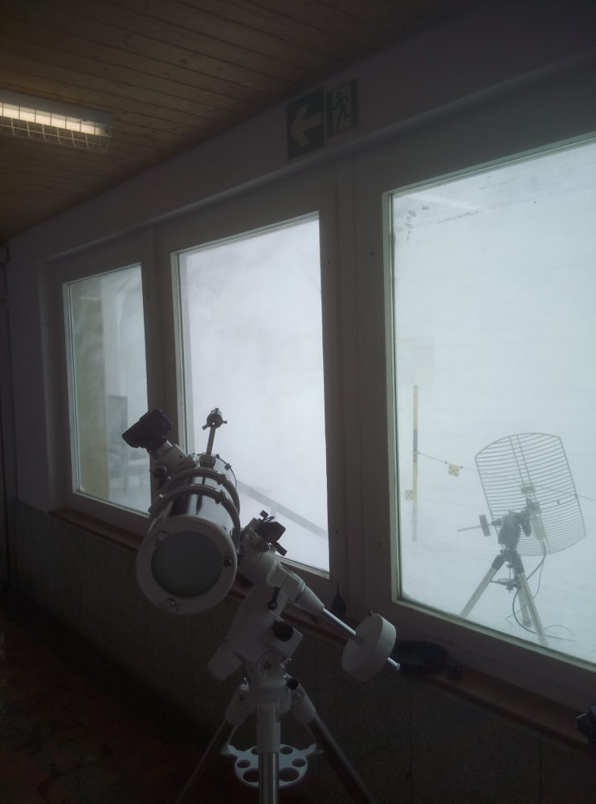
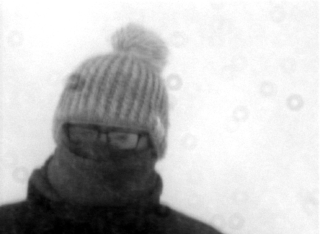

MEME (Massive Exoplanet Meme Exposition)
Together with 3 friends, I co-founded the MEME. Every year in January, the MEME presents memes all around exoplanets, astrophysics and student life.
"With my head up in the sky
I ask the stars to speak to me
But only riddles I receive
Unlike anything I've seen
Their answers might exceed my reach
Byt I stretch, with fingers spread"
As part of the physic labs, bachelor students have the opportunity to join a one week observation camp at the summit station of Diavolezza at 3000 m. Using amateur telescopes, different teams tried to observe galaxies, stellar clusters and the sun.

My team was tasked with observing open and globular star clusters using the Celestron C8 and Celestron C14 amateur telescopes. Operating them outside at 3000 m in the middle of winter is a challenge in its own, but one we were happy to take on. Unfortuantly, soon after we arrived the weather began to turn. Constant cloud coverage and strong winds made observation nearly impossible. We nevertheless tried but after several attempts had to admit that we will not be able to take reasonable data. The rest of the week we stayed inside and optimized our evaluation routines.

Because we were not able to observe stars, we started to get creative with our observation targets. After some planing and combining nearly every eye piece available, we managed to increase the field of view enough to image targets at 50 m. This allowed me to gear up and go into the snow storm. After several attempts, we managed to take a picture of me through a telescope in the middle of a snow storm. This might be the favourite picture of myself but unfortunatly, it stayed the only one we took the whole week.
Having taken zero images, spending windy nights at minus degrees and being sleep-deprived from switching between day and night rythm, I still consider the Astrowoche one of the most amazing experiences I've ever had and one that confirmed for me that astrophysics is the way to go.
Together with 3 friends, I co-founded the MEME. Every year in January, the MEME presents memes all around exoplanets, astrophysics and student life.
ARIS is the rocket team of ETH Zuerich. In 2019, I was the payload team leader and together we won 2nd place.
A game development team that started from a high school project. Several groups worked on the design, coding and screen play.
The SYPT is a annual competition where high school students have to prepare, conduct and present a physics experiment.
A collaboration between writers and exoplanet scientists to create short stories, poems and radio plays based on contemporary research.